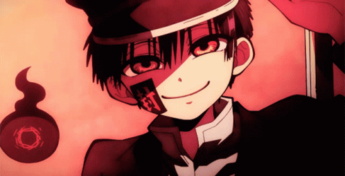

Hola! Bienvenido a mi rincón web inspirado en la era dorada de Windows XP y MSN. Programador enfocado en interfaces elegantes y software funcional.
JavaScript, TypeScript, QML, Python, C++, HTML5/CSS3, Git & GitHub Actions.
No dudes en explorar mis proyectos destacados y clonar lo que te sirva: